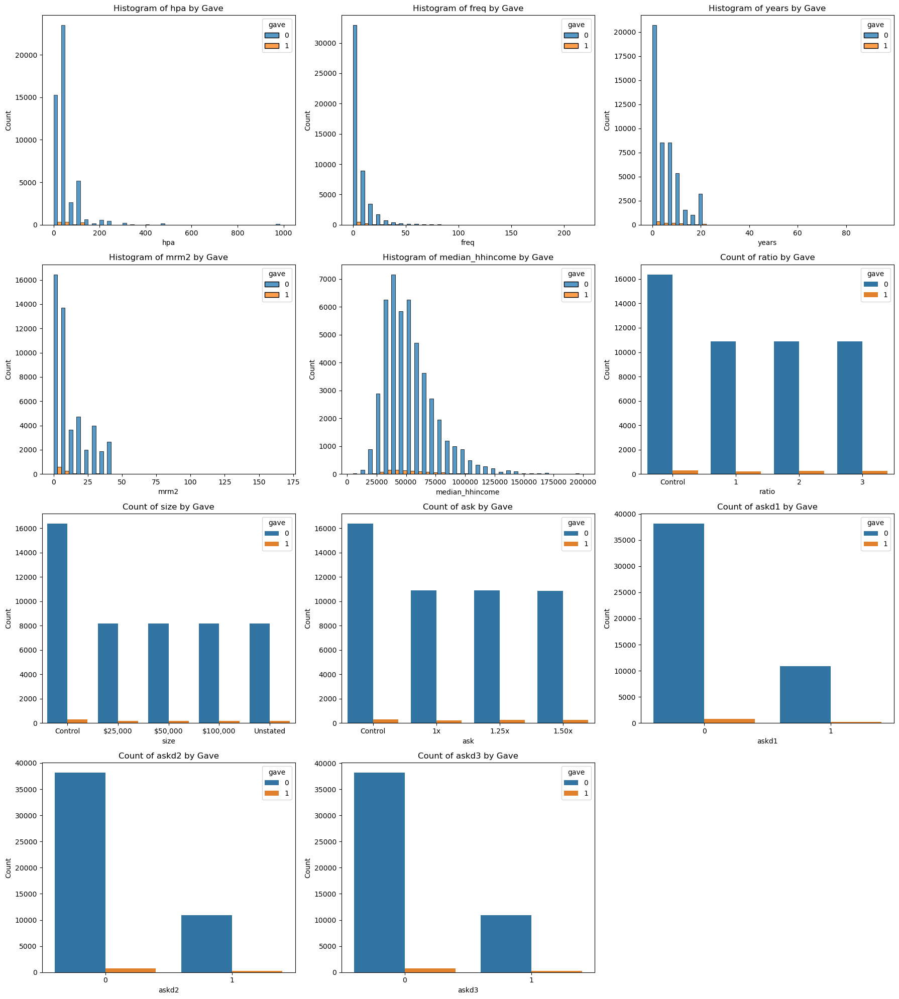
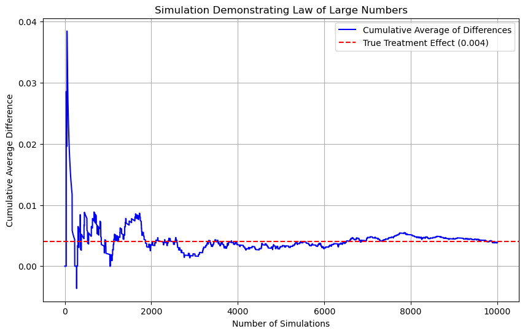

# Generate markdown table to insert into Quarto documentmarkdown_table = datadesc.to_markdown(index=False)withopen("index.qmd", "r") as f: qmd_text = f.read()qmd_text = qmd_text.replace("<!-- INSERT_DESC_HERE -->", markdown_table)withopen("index.qmd", "w") as f: f.write(qmd_text)
# Replace 'give' with the correct column name, e.g., 'gave', which exists in the dfframedfg = df[df['gave'] ==1]
percentage_gave = (df['gave'].astype(int).sum() /len(df)) *100print(f"Percentage of rows where gave = 1: {percentage_gave:.2f}%")
Percentage of rows where gave = 1: 2.06%
import matplotlib.pyplot as pltimport seaborn as sns# Key variables and experimental treatment variables to explorevariables_to_plot = ['hpa', 'freq', 'years', 'mrm2', 'median_hhincome', 'ratio', 'size', 'ask', 'askd1', 'askd2', 'askd3', ]import math# Set up the figure layoutnum_vars =len(variables_to_plot)num_cols =3num_rows = math.ceil(num_vars / num_cols)plt.figure(figsize=(18, 5* num_rows))for idx, var inenumerate(variables_to_plot, 1): plt.subplot(num_rows, num_cols, idx)if df[var].dtype in ['int64', 'float64', 'float32', 'int16', 'int8']: sns.histplot(data=df, x=var, hue='gave', multiple='dodge', bins=30) plt.title(f'Histogram of {var} by Gave')else: sns.countplot(data=df, x=var, hue='gave') plt.title(f'Count of {var} by Gave') plt.xlabel(var) plt.ylabel('Count') plt.tight_layout()plt.show()

# Key variables and experimental treatment variables to explorevariables_to_plot = ['hpa', 'freq', 'years', 'mrm2', 'median_hhincome', 'ratio', 'size', 'ask']# Set up the figure layoutnum_vars =len(variables_to_plot)num_cols =3num_rows =-(-num_vars // num_cols) # Ceiling divisionplt.figure(figsize=(18, 5* num_rows))# Plot distribution of donation amount against each variablefor idx, var inenumerate(variables_to_plot, 1): plt.subplot(num_rows, num_cols, idx)if var in ['freq', 'hpa']: sns.histplot(data=dfg, x=var, bins=10, kde=True) plt.title(f'Binned Histogram of {var}')elif dfg[var].dtype in ['int64', 'float64']: sns.histplot(data=dfg, x=var, bins=30, kde=True) plt.title(f'Distribution of {var}')else: sns.countplot(data=dfg, x=var) plt.title(f'Frequency of {var}') plt.tight_layout()plt.show()
/tmp/ipykernel_5207/3543977266.py:1: SettingWithCopyWarning:
A value is trying to be set on a copy of a slice from a DataFrame.
Try using .loc[row_indexer,col_indexer] = value instead
See the caveats in the documentation: https://pandas.pydata.org/pandas-docs/stable/user_guide/indexing.html#returning-a-view-versus-a-copy
dfg[['ltmedmra', 'year5', 'dormant','red0']] = dfg[['ltmedmra', 'year5', 'dormant','red0']].astype('category')
donor_characteristics = ['ltmedmra', 'year5', 'gender']geo_political_context = ['red0', 'perbush', 'nonlit']zip_code_demographics = ['median_hhincome', 'powner', 'psch_atlstba']# Combine into one list if neededselected_vars = donor_characteristics + geo_political_context + zip_code_demographicsnum_vars =len(variables_to_plot)num_cols =3num_rows =-(-num_vars // num_cols) # Ceiling divisionplt.figure(figsize=(18, 5* num_rows))# Plot distribution or frequency plots for selected_vars against 'amount'for idx, var inenumerate(selected_vars, 1): plt.subplot(num_rows, num_cols, idx)if df[var].dtype in ['int64', 'float64', 'float32', 'int16', 'int8']: sns.histplot(data=dfg, x=var, bins=10, kde=True) plt.title(f' Plot of {var} vs Amount')else: sns.countplot(data=dfg, x=var) plt.title(f'Frequency of {var}') plt.xlabel(var) plt.ylabel('Amount') plt.tight_layout()plt.show()
Variable
Description
treatment
Treatment
control
Control
ratio
Match ratio
ratio2
2:1 match ratio
ratio3
3:1 match ratio
size
Match threshold
size25
$25,000 match threshold
size50
$50,000 match threshold
size100
$100,000 match threshold
sizeno
Unstated match threshold
ask
Suggested donation amount
askd1
Suggested donation was highest previous contribution
askd2
Suggested donation was 1.25 x highest previous contribution
askd3
Suggested donation was 1.50 x highest previous contribution
ask1
Highest previous contribution (for suggestion)
ask2
1.25 x highest previous contribution (for suggestion)
ask3
1.50 x highest previous contribution (for suggestion)
amount
Dollars given
gave
Gave anything
amountchange
Change in amount given
hpa
Highest previous contribution
ltmedmra
Small prior donor: last gift was less than median $35
freq
Number of prior donations
years
Number of years since initial donation
year5
At least 5 years since initial donation
mrm2
Number of months since last donation
dormant
Already donated in 2005
female
Female
couple
Couple
state50one
State tag: 1 for one observation of each of 50 states; 0 otherwise
nonlit
Nonlitigation
cases
Court cases from state in 2004-5 in which organization was involved
statecnt
Percent of sample from state
stateresponse
Proportion of sample from the state who gave
stateresponset
Proportion of treated sample from the state who gave
stateresponsec
Proportion of control sample from the state who gave
stateresponsetminc
stateresponset - stateresponsec
perbush
State vote share for Bush
close25
State vote share for Bush between 47.5% and 52.5%
red0
Red state
blue0
Blue state
redcty
Red county
bluecty
Blue county
pwhite
Proportion white within zip code
pblack
Proportion black within zip code
page18_39
Proportion age 18-39 within zip code
ave_hh_sz
Average household size within zip code
median_hhincome
Median household income within zip code
powner
Proportion house owner within zip code
psch_atlstba
Proportion who finished college within zip code
pop_propurban
Proportion of population urban within zip code
Hypothesis tests to confirm if non-outcome variables are not significantly different in control and treatment groups
treatment_group_mrm2 = df[df['treatment'] ==1]['mrm2'].dropna()control_group_mrm2 = df[df['control'] ==1]['mrm2'].dropna()# Calculate t-statisticmean_diff = treatment_group_mrm2.mean() - control_group_mrm2.mean()var_treatment = treatment_group_mrm2.var(ddof=1)var_control = control_group_mrm2.var(ddof=1)n_treatment =len(treatment_group_mrm2)n_control =len(control_group_mrm2)pooled_se = ((var_treatment / n_treatment) + (var_control / n_control)) **0.5manual_t_stat = mean_diff / pooled_seprint(f"Manual T-statistic: {manual_t_stat:.4f}")from scipy.stats import t# Degrees of freedomdf_degrees = n_treatment + n_control -2# Critical value for 95% confidence level (two-tailed test)critical_value = t.ppf(1-0.025, df_degrees)print(f"Critical value (95% confidence level): {critical_value:.4f}")# Compare manual_t_stat against critical valueifabs(manual_t_stat) > critical_value:print("Reject the null hypothesis: There is a statistically significant difference in mrm2 between treatment and control groups.")else:print("Fail to reject the null hypothesis: There is no statistically significant difference in mrm2 between treatment and control groups.")
Manual T-statistic: 0.1195
Critical value (95% confidence level): 1.9600
Fail to reject the null hypothesis: There is no statistically significant difference in mrm2 between treatment and control groups.
#crosss check with scipy statsfrom scipy.stats import ttest_indfrom scipy.stats import tt_stat, p_value = ttest_ind(treatment_group_mrm2, control_group_mrm2, equal_var=False)print(f"T-statistic: {t_stat:.4f}")print(f"P-value: {p_value:.4f}")# Check significance at 95% confidence levelif p_value <0.05:print("The difference in mrm2 between treatment and control groups is statistically significant.")else:print("The difference in mrm2 between treatment and control groups is not statistically significant.")
T-statistic: 0.1195
P-value: 0.9049
The difference in mrm2 between treatment and control groups is not statistically significant.
Confirm with linear regression:
Model: mrm2 = β0 + β1 * treatment + ε
The coefficient β1 tells you the mean difference between treatment and control. The p-value on β1 tells you if this difference is statistically significant. Epsilon is the error term, which captures all other factors that might affect mrm2.
#using linear regression to confirmimport statsmodels.api as smX = df['treatment'] # Independent variabley = df['mrm2'] # Dependent variableX = sm.add_constant(X)model = sm.OLS(y, X, missing='drop').fit()print(model.summary())print(f"T-value for treatment: {model.tvalues['treatment']:.4f}")print(f"P-value for treatment: {model.pvalues['treatment']:.4f}")p_valuem = model.pvalues['treatment']t_valuem = model.tvalues['treatment']# Check the p-value of the treatment coefficientif model.pvalues['treatment'] <0.05:print("The treatment effect on mrm2 is statistically significant.")else:print("The treatment effect on mrm2 is not statistically significant.")
OLS Regression Results
==============================================================================
Dep. Variable: mrm2 R-squared: 0.000
Model: OLS Adj. R-squared: -0.000
Method: Least Squares F-statistic: 0.01428
Date: Mon, 21 Apr 2025 Prob (F-statistic): 0.905
Time: 19:24:38 Log-Likelihood: -1.9585e+05
No. Observations: 50082 AIC: 3.917e+05
Df Residuals: 50080 BIC: 3.917e+05
Df Model: 1
Covariance Type: nonrobust
==============================================================================
coef std err t P>|t| [0.025 0.975]
------------------------------------------------------------------------------
const 12.9981 0.094 138.979 0.000 12.815 13.181
treatment 0.0137 0.115 0.119 0.905 -0.211 0.238
==============================================================================
Omnibus: 8031.352 Durbin-Watson: 2.004
Prob(Omnibus): 0.000 Jarque-Bera (JB): 12471.135
Skew: 1.163 Prob(JB): 0.00
Kurtosis: 3.751 Cond. No. 3.23
==============================================================================
Notes:
[1] Standard Errors assume that the covariance matrix of the errors is correctly specified.
T-value for treatment: 0.1195
P-value for treatment: 0.9049
The treatment effect on mrm2 is not statistically significant.
Perform hypothesis tests on other variable, picking few from each “bucket” of variables.
import pandas as pdimport numpy as npimport statsmodels.api as smfrom scipy.stats import tdonor_characteristics = ['freq', 'year5', 'female','mrm2'] geo_political_context = ['red0', 'perbush', 'nonlit']zip_code_demographics = ['median_hhincome', 'powner', 'psch_atlstba']all_vars = donor_characteristics + geo_political_context + zip_code_demographics# Set significance levelalpha =0.05# Store resultsresults = []for v in all_vars:# Drop missing data treatment = df[df['treatment'] ==1][v].dropna() control = df[df['control'] ==1][v].dropna()# Convert categorical variables to numeric if necessaryif treatment.dtype.name =='category': treatment = treatment.astype(int)if control.dtype.name =='category': control = control.astype(int)# Manual t-test mean_diff = treatment.mean() - control.mean() var_treatment = treatment.var(ddof=1) var_control = control.var(ddof=1) n_treatment =len(treatment) n_control =len(control) pooled_se = ((var_treatment / n_treatment) + (var_control / n_control))**0.5 manual_t_stat = mean_diff / pooled_se df_degrees = n_treatment + n_control -2 critical_value = t.ppf(1- alpha/2, df_degrees) manual_conclusion ="Significant"ifabs(manual_t_stat) > critical_value else"Not Significant"# Regression X = df['treatment'] y = df[v] X = sm.add_constant(X) model = sm.OLS(y, X, missing='drop').fit(cov_type='HC1') reg_t_stat =round(model.tvalues['treatment'], 4) reg_p_value =round(model.pvalues['treatment'], 4) reg_conclusion ="Significant"if reg_p_value < alpha else"Not Significant"# Store the results results.append({"Variable": v,"Manual T-Stat": round(manual_t_stat, 4),"Critical Value": round(critical_value, 4),"Manual Test Conclusion": manual_conclusion,"Regression T-Stat": reg_t_stat,"Regression P-Value": reg_p_value,"Regression Conclusion": reg_conclusion })results_df = pd.DataFrame(results)results_df
Variable
Manual T-Stat
Critical Value
Manual Test Conclusion
Regression T-Stat
Regression P-Value
Regression Conclusion
0
freq
-0.1108
1.96
Not Significant
-0.1108
0.9117
Not Significant
1
year5
-1.5627
1.96
Not Significant
-1.5627
0.1181
Not Significant
2
female
-1.7535
1.96
Not Significant
-1.7535
0.0795
Not Significant
3
mrm2
0.1195
1.96
Not Significant
0.1195
0.9049
Not Significant
4
red0
1.8773
1.96
Not Significant
1.8773
0.0605
Not Significant
5
perbush
2.7463
1.96
Significant
2.7463
0.0060
Significant
6
nonlit
1.7052
1.96
Not Significant
1.7052
0.0882
Not Significant
7
median_hhincome
-0.7433
1.96
Not Significant
-0.7433
0.4573
Not Significant
8
powner
0.1895
1.96
Not Significant
0.1894
0.8498
Not Significant
9
psch_atlstba
-1.8427
1.96
Not Significant
-1.8427
0.0654
Not Significant
print(results_df.to_markdown(index=False))
| Variable | Manual T-Stat | Critical Value | Manual Test Conclusion | Regression T-Stat | Regression P-Value | Regression Conclusion |
|:----------------|----------------:|-----------------:|:-------------------------|--------------------:|---------------------:|:------------------------|
| freq | -0.1108 | 1.96 | Not Significant | -0.1108 | 0.9117 | Not Significant |
| year5 | -1.5627 | 1.96 | Not Significant | -1.5627 | 0.1181 | Not Significant |
| female | -1.7535 | 1.96 | Not Significant | -1.7535 | 0.0795 | Not Significant |
| mrm2 | 0.1195 | 1.96 | Not Significant | 0.1195 | 0.9049 | Not Significant |
| red0 | 1.8773 | 1.96 | Not Significant | 1.8773 | 0.0605 | Not Significant |
| perbush | 2.7463 | 1.96 | Significant | 2.7463 | 0.006 | Significant |
| nonlit | 1.7052 | 1.96 | Not Significant | 1.7052 | 0.0882 | Not Significant |
| median_hhincome | -0.7433 | 1.96 | Not Significant | -0.7433 | 0.4573 | Not Significant |
| powner | 0.1895 | 1.96 | Not Significant | 0.1894 | 0.8498 | Not Significant |
| psch_atlstba | -1.8427 | 1.96 | Not Significant | -1.8427 | 0.0654 | Not Significant |
# Generate markdown tablemarkdown_table = results_df.to_markdown(index=False)# Read the original .qmd contentwithopen("index.qmd", "r") as f: qmd_text = f.read()# Replace the placeholder with the tableqmd_text = qmd_text.replace("<!-- INSERT_RESULTS_HERE -->", markdown_table)# Write back the updated filewithopen("index.qmd", "w") as f: f.write(qmd_text)
Chairtable contribution made
# Calculate the proportion of people who donated in each grouptreatment_proportion = df[df['treatment'] ==1]['gave'].mean()control_proportion = df[df['control'] ==1]['gave'].mean()plt.figure(figsize=(8, 6))ax = sns.barplot(x=['Treatment', 'Control'], y=[treatment_proportion, control_proportion], palette='viridis')for i, proportion inenumerate([treatment_proportion, control_proportion]): plt.text(i, proportion +0.001, f'{proportion:.3f}', ha='center', va='bottom', fontsize=10)plt.title('Proportion of People Who Donated by Group')plt.ylabel('Proportion')plt.xlabel('Group')plt.ylim(0, 0.05)plt.show()
/tmp/ipykernel_5207/963862486.py:6: FutureWarning:
Passing `palette` without assigning `hue` is deprecated and will be removed in v0.14.0. Assign the `x` variable to `hue` and set `legend=False` for the same effect.
ax = sns.barplot(x=['Treatment', 'Control'], y=[treatment_proportion, control_proportion], palette='viridis')
# Perform a bivariate linear regressionX = df['treatment'] # Independent variabley = df['gave'] # Dependent variable (binary outcome)X = sm.add_constant(X) # Add a constant for the regressionmodel = sm.OLS(y, X, missing='drop').fit()# Print the regression summaryprint(model.summary())# Extract the p-value and coefficient for interpretationp_value = model.pvalues['treatment']coef = model.params['treatment']# Interpretationif p_value <0.05:print(f"The treatment effect is statistically significant (p-value: {p_value:.4f}).")print(f"The coefficient for treatment is {coef:.4f}, indicating that being in the treatment group increases the likelihood of making a charitable donation by {coef *100:.2f} percentage points.")else:print(f"The treatment effect is not statistically significant (p-value: {p_value:.4f}).")print("There is no evidence to suggest that being in the treatment group affects the likelihood of making a charitable donation.")
OLS Regression Results
==============================================================================
Dep. Variable: gave R-squared: 0.000
Model: OLS Adj. R-squared: 0.000
Method: Least Squares F-statistic: 9.618
Date: Mon, 21 Apr 2025 Prob (F-statistic): 0.00193
Time: 19:24:39 Log-Likelihood: 26630.
No. Observations: 50083 AIC: -5.326e+04
Df Residuals: 50081 BIC: -5.324e+04
Df Model: 1
Covariance Type: nonrobust
==============================================================================
coef std err t P>|t| [0.025 0.975]
------------------------------------------------------------------------------
const 0.0179 0.001 16.225 0.000 0.016 0.020
treatment 0.0042 0.001 3.101 0.002 0.002 0.007
==============================================================================
Omnibus: 59814.280 Durbin-Watson: 2.005
Prob(Omnibus): 0.000 Jarque-Bera (JB): 4317152.727
Skew: 6.740 Prob(JB): 0.00
Kurtosis: 46.440 Cond. No. 3.23
==============================================================================
Notes:
[1] Standard Errors assume that the covariance matrix of the errors is correctly specified.
The treatment effect is statistically significant (p-value: 0.0019).
The coefficient for treatment is 0.0042, indicating that being in the treatment group increases the likelihood of making a charitable donation by 0.42 percentage points.
print(results_bl.to_markdown(index=False))markdown_table = results_bl.to_markdown(index=False)# Read the original .qmd contentwithopen("index.qmd", "r") as f: qmd_text = f.read()# Replace the placeholder with the tableqmd_text = qmd_text.replace("<!-- INSERT_RESULTSb1_HERE -->", markdown_table)# Write back the updated filewithopen("index.qmd", "w") as f: f.write(qmd_text)
Probit regression where the outcome variable is whether any charitable donation was made and the explanatory variable is assignment to treatment or control
import statsmodels.api as smX = df['treatment'] # Independent variabley = df['gave'] # Dependent variable (binary outcome)X = sm.add_constant(X)probit_model = sm.Probit(y, X, missing='drop').fit()print(probit_model.summary())p_value_probit = probit_model.pvalues['treatment']coef_probit = probit_model.params['treatment']# Interpretationif p_value_probit <0.05:print(f"The treatment effect is statistically significant (p-value: {p_value_probit:.4f}).")print(f"The coefficient for treatment is {coef_probit:.4f}, indicating that being in the treatment group has a significant effect on the likelihood of making a charitable donation.")else:print(f"The treatment effect is not statistically significant (p-value: {p_value_probit:.4f}).")print("There is no evidence to suggest that being in the treatment group affects the likelihood of making a charitable donation.")
Optimization terminated successfully.
Current function value: 0.100443
Iterations 7
Probit Regression Results
==============================================================================
Dep. Variable: gave No. Observations: 50083
Model: Probit Df Residuals: 50081
Method: MLE Df Model: 1
Date: Mon, 21 Apr 2025 Pseudo R-squ.: 0.0009783
Time: 19:24:40 Log-Likelihood: -5030.5
converged: True LL-Null: -5035.4
Covariance Type: nonrobust LLR p-value: 0.001696
==============================================================================
coef std err z P>|z| [0.025 0.975]
------------------------------------------------------------------------------
const -2.1001 0.023 -90.073 0.000 -2.146 -2.054
treatment 0.0868 0.028 3.113 0.002 0.032 0.141
==============================================================================
The treatment effect is statistically significant (p-value: 0.0019).
The coefficient for treatment is 0.0868, indicating that being in the treatment group has a significant effect on the likelihood of making a charitable donation.
print(results_pr.to_markdown(index=False))markdown_table = results_pr.to_markdown(index=False)# Read the original .qmd contentwithopen("index.qmd", "r") as f: qmd_text = f.read()# Replace the placeholder with the tableqmd_text = qmd_text.replace("<!-- INSERT_RESULTSpr_HERE -->", markdown_table)# Write back the updated filewithopen("index.qmd", "w") as f: f.write(qmd_text)
print("Unique values in 'ratio':", df['ratio'].unique())print("Unique values in 'ratio2':", df['ratio2'].unique())print("Unique values in 'ratio3':", df['ratio3'].unique())
from scipy.stats import ttest_ind# Create group masksis_1to1 = (df['treatment'] ==1) & (df['ratio2'] ==0) & (df['ratio3'] ==0)is_2to1 = df['ratio2'] ==1is_3to1 = df['ratio3'] ==1# Get gave outcomes for each groupgave_1to1 = df[is_1to1]['gave'].dropna()gave_2to1 = df[is_2to1]['gave'].dropna()gave_3to1 = df[is_3to1]['gave'].dropna()# Run t-testst_stat_21, p_val_21 = ttest_ind(gave_2to1, gave_1to1, equal_var=False)t_stat_31, p_val_31 = ttest_ind(gave_3to1, gave_1to1, equal_var=False)t_stat_32, p_val_32 = ttest_ind(gave_3to1, gave_2to1, equal_var=False)# Print resultsprint(f"2:1 vs 1:1 → t = {t_stat_21:.4f}, p = {p_val_21:.4f}")print(f"3:1 vs 1:1 → t = {t_stat_31:.4f}, p = {p_val_31:.4f}")print(f"3:1 vs 2:1 → t = {t_stat_32:.4f}, p = {p_val_32:.4f}")
2:1 vs 1:1 → t = 0.9650, p = 0.3345
3:1 vs 1:1 → t = 1.0150, p = 0.3101
3:1 vs 2:1 → t = 0.0501, p = 0.9600
| Comparison | Group 1 Mean Donation Rate | Group 2 Mean Donation Rate | Mean Diff (pp) | T-Statistic | Critical Value (±) | Conclusion |
|:-------------|-----------------------------:|-----------------------------:|-----------------:|--------------:|---------------------:|:----------------|
| 2:1 vs 1:1 | 2.26 | 2.07 | 0.19 | 0.965 | 1.9601 | Not Significant |
| 3:1 vs 1:1 | 2.27 | 2.07 | 0.2 | 1.015 | 1.9601 | Not Significant |
| 3:1 vs 2:1 | 2.27 | 2.26 | 0.01 | 0.0501 | 1.9601 | Not Significant |
# Generate markdown tablemarkdown_table = results1_df.to_markdown(index=False)# Read the original .qmd contentwithopen("index.qmd", "r") as f: qmd_text = f.read()# Replace the placeholder with the tableqmd_text = qmd_text.replace("<!-- INSERT_RESULTS1_HERE -->", markdown_table)# Write back the updated filewithopen("index.qmd", "w") as f: f.write(qmd_text)
Assess the same issue using a regression. Specifically, create the variable ratio1 then regress gave on ratio1, ratio2, and ratio3 (or alternatively, regress gave on the categorical variable ratio). Interpret the coefficients and their statistical precision
# Create the ratio1 variabledf['ratio1'] = ((df['ratio2'] ==0) & (df['ratio3'] ==0)).astype(int)X = df[['ratio1', 'ratio2', 'ratio3']] # Independent variablesy = df['gave'] # Dependent variableX = sm.add_constant(X) # Add a constant term for the regressionmodel = sm.OLS(y, X, missing='drop').fit()print(model.summary())coefficients = model.paramsp_values = model.pvaluesfor var in ['ratio1', 'ratio2', 'ratio3']:if p_values[var] <0.05:print(f"The coefficient for {var} is {coefficients[var]:.4f}, which is statistically significant (p-value: {p_values[var]:.4f}).")else:print(f"The coefficient for {var} is {coefficients[var]:.4f}, which is not statistically significant (p-value: {p_values[var]:.4f}).")
OLS Regression Results
==============================================================================
Dep. Variable: gave R-squared: 0.000
Model: OLS Adj. R-squared: 0.000
Method: Least Squares F-statistic: 2.743
Date: Mon, 21 Apr 2025 Prob (F-statistic): 0.0415
Time: 19:24:41 Log-Likelihood: 26629.
No. Observations: 50083 AIC: -5.325e+04
Df Residuals: 50079 BIC: -5.321e+04
Df Model: 3
Covariance Type: nonrobust
==============================================================================
coef std err t P>|t| [0.025 0.975]
------------------------------------------------------------------------------
const 1.229e+10 1.54e+11 0.080 0.936 -2.89e+11 3.14e+11
ratio1 -1.229e+10 1.54e+11 -0.080 0.936 -3.14e+11 2.89e+11
ratio2 -1.229e+10 1.54e+11 -0.080 0.936 -3.14e+11 2.89e+11
ratio3 -1.229e+10 1.54e+11 -0.080 0.936 -3.14e+11 2.89e+11
==============================================================================
Omnibus: 59815.676 Durbin-Watson: 2.005
Prob(Omnibus): 0.000 Jarque-Bera (JB): 4317583.266
Skew: 6.741 Prob(JB): 0.00
Kurtosis: 46.443 Cond. No. 5.80e+14
==============================================================================
Notes:
[1] Standard Errors assume that the covariance matrix of the errors is correctly specified.
[2] The smallest eigenvalue is 2.13e-25. This might indicate that there are
strong multicollinearity problems or that the design matrix is singular.
The coefficient for ratio1 is -12293201518.4371, which is not statistically significant (p-value: 0.9363).
The coefficient for ratio2 is -12293201518.4334, which is not statistically significant (p-value: 0.9363).
The coefficient for ratio3 is -12293201518.4333, which is not statistically significant (p-value: 0.9363).
#The results show clear signs of a severe multicollinearity or design matrix error, likely caused by including all three dummy variables (ratio1, ratio2, ratio3) without dropping a reference group. Since the three dummies are mutually exclusive and exhaustive (they sum to 1), including all of them with a constant creates a perfect linear dependency, which leads to a singular matrix and unreliable coefficient estimates. # To fix this, I omit one of the ratio dummies (e.g., drop ratio1) so that the remaining coefficients (ratio2 and ratio3) are interpreted relative to the 1:1 match group. import statsmodels.api as sm# Make sure 'gave' is numericy = df['gave'].astype(float)# Only include ratio2 and ratio3 — 1:1 (ratio1) is the reference groupX = df[['ratio2', 'ratio3']]# Add a constant (intercept)X = sm.add_constant(X)# Fit the linear regression modelmodel = sm.OLS(y, X, missing='drop').fit()# Print summaryprint(model.summary())# Interpret the coefficientscoefficients = model.paramsp_values = model.pvaluesfor var in ['ratio2', 'ratio3']:if p_values[var] <0.05:print(f"The coefficient for {var} is {coefficients[var]:.4f}, which is statistically significant (p-value: {p_values[var]:.4f}).")else:print(f"The coefficient for {var} is {coefficients[var]:.4f}, which is not statistically significant (p-value: {p_values[var]:.4f}).")
OLS Regression Results
==============================================================================
Dep. Variable: gave R-squared: 0.000
Model: OLS Adj. R-squared: 0.000
Method: Least Squares F-statistic: 4.117
Date: Mon, 21 Apr 2025 Prob (F-statistic): 0.0163
Time: 19:24:41 Log-Likelihood: 26629.
No. Observations: 50083 AIC: -5.325e+04
Df Residuals: 50080 BIC: -5.323e+04
Df Model: 2
Covariance Type: nonrobust
==============================================================================
coef std err t P>|t| [0.025 0.975]
------------------------------------------------------------------------------
const 0.0190 0.001 22.306 0.000 0.017 0.021
ratio2 0.0036 0.002 2.269 0.023 0.000 0.007
ratio3 0.0037 0.002 2.332 0.020 0.001 0.007
==============================================================================
Omnibus: 59815.856 Durbin-Watson: 2.005
Prob(Omnibus): 0.000 Jarque-Bera (JB): 4317637.927
Skew: 6.741 Prob(JB): 0.00
Kurtosis: 46.443 Cond. No. 3.16
==============================================================================
Notes:
[1] Standard Errors assume that the covariance matrix of the errors is correctly specified.
The coefficient for ratio2 is 0.0036, which is statistically significant (p-value: 0.0233).
The coefficient for ratio3 is 0.0037, which is statistically significant (p-value: 0.0197).
print(results_r.to_markdown(index=False))markdown_table = results_r.to_markdown(index=False)# Read the original .qmd contentwithopen("index.qmd", "r") as f: qmd_text = f.read()# Replace the placeholder with the tableqmd_text = qmd_text.replace("<!-- INSERT_RESULTSr_HERE -->", markdown_table)# Write back the updated filewithopen("index.qmd", "w") as f: f.write(qmd_text)
Calculate the response rate difference between the 1:1 and 2:1 match ratios and the 2:1 and 3:1 ratios. Do this directly from the data, and do it by computing the differences in the fitted coefficients of the previous regression. what do you conclude regarding the effectiveness of different sizes of matched donations?
# Identify match groupsis_1to1 = (df['treatment'] ==1) & (df['ratio2'] ==0) & (df['ratio3'] ==0)is_2to1 = df['ratio2'] ==1is_3to1 = df['ratio3'] ==1# donation ratesrate_1to1 = df[is_1to1]['gave'].mean()rate_2to1 = df[is_2to1]['gave'].mean()rate_3to1 = df[is_3to1]['gave'].mean()diff_21_vs_11 = rate_2to1 - rate_1to1diff_31_vs_21 = rate_3to1 - rate_2to1print(f"2:1 vs 1:1 response rate difference: {diff_21_vs_11:.4f}")print(f"3:1 vs 2:1 response rate difference: {diff_31_vs_21:.4f}")# difference from coefficients from the regressioncoef_2to1 = coefficients['ratio2']coef_3to1 = coefficients['ratio3']diff_coef_1to1_2to1 = coef_2to1 # Coefficient for ratio2 represents the difference from 1:1diff_coef_2to1_3to1 = coef_3to1 - coef_2to1 # Difference between coefficients for ratio3 and ratio2print(f"Response rate difference from coefficients (2:1 - 1:1): {diff_coef_1to1_2to1:.4f}")print(f"Response rate difference from coefficients (3:1 - 2:1): {diff_coef_2to1_3to1:.4f}")
2:1 vs 1:1 response rate difference: 0.0019
3:1 vs 2:1 response rate difference: 0.0001
Response rate difference from coefficients (2:1 - 1:1): 0.0036
Response rate difference from coefficients (3:1 - 2:1): 0.0001
Size of Charitable Contribution
Calculate a t-test of the donation amount on the treatment status
Including donation values where gave = 0 i.e. donation = 0
from scipy.stats import t# Select donation amount by grouptreatment_group_amount = df[df['treatment'] ==1]['amount'].dropna()control_group_amount = df[df['treatment'] ==0]['amount'].dropna()# Basic statsmean_diff = treatment_group_amount.mean() - control_group_amount.mean()var_treatment = treatment_group_amount.var(ddof=1)var_control = control_group_amount.var(ddof=1)n_treatment =len(treatment_group_amount)n_control =len(control_group_amount)# Pooled standard errorpooled_se = ((var_treatment / n_treatment) + (var_control / n_control)) **0.5# Manual t-statisticmanual_t_stat = mean_diff / pooled_seprint(f"Manual T-statistic: {manual_t_stat:.4f}")# Degrees of freedom (for equal variance t-test)df_degrees = n_treatment + n_control -2# Critical t value for 95% confidence (two-tailed)critical_value = t.ppf(1-0.025, df_degrees)print(f"Critical value (±): {critical_value:.4f}")# Conclusionifabs(manual_t_stat) > critical_value:print("Result: Statistically significant difference in donation amount.")else:print("Result: No statistically significant difference in donation amount.")
Manual T-statistic: 1.9182
Critical value (±): 1.9600
Result: No statistically significant difference in donation amount.
from scipy.stats import ttest_ind# Extract donation amounts for treatment and control groupstreatment_donations = df[df['treatment'] ==1]['amount'].dropna()control_donations = df[df['control'] ==1]['amount'].dropna()# Perform t-testt_stat, p_value = ttest_ind(treatment_donations, control_donations, equal_var=False)print(f"T-statistic: {t_stat:.4f}")print(f"P-value: {p_value:.4f}")mean_treatment = treatment_donations.mean()mean_control = control_donations.mean()print(f"Mean donation (treatment group): ${mean_treatment:.2f}")print(f"Mean donation (control group): ${mean_control:.2f}")# Check significance at 95% confidence levelif p_value <0.05:print("The difference in donation amounts between treatment and control groups is statistically significant.")else:print("The difference in donation amounts between treatment and control groups is not statistically significant.")
T-statistic: 1.9183
P-value: 0.0551
Mean donation (treatment group): $0.97
Mean donation (control group): $0.81
The difference in donation amounts between treatment and control groups is not statistically significant.
Only including donation values where gave = 1 i.e. donation > 0
from scipy.stats import ttest_ind# Extract donation amounts for treatment and control groupstreatment_donations = df[(df['treatment'] ==1) & (df['gave'] ==1)]['amount'].dropna()control_donations = df[(df['control'] ==1) & (df['gave'] ==1)]['amount'].dropna()# Perform t-testt_stat, p_value = ttest_ind(treatment_donations, control_donations, equal_var=False)print(f"T-statistic: {t_stat:.4f}")print(f"P-value: {p_value:.4f}")mean_treatment = treatment_donations.mean()mean_control = control_donations.mean()print(f"Mean donation (treatment group): ${mean_treatment:.2f}")print(f"Mean donation (control group): ${mean_control:.2f}")# Check significance at 95% confidence levelif p_value <0.05:print("The difference in donation amounts between treatment and control groups is statistically significant.")else:print("The difference in donation amounts between treatment and control groups is not statistically significant.")
T-statistic: -0.5846
P-value: 0.5590
Mean donation (treatment group): $43.87
Mean donation (control group): $45.54
The difference in donation amounts between treatment and control groups is not statistically significant.
#using bivariate regression donors = df[df['gave'] ==1].copy()y = donors['amount'].astype(float)X = sm.add_constant(donors['treatment']) # Treatment: 1 = treatment group, 0 = controlmodel = sm.OLS(y, X).fit()print(model.summary())coef = model.params['treatment']p_val = model.pvalues['treatment']mean_treat = donors[donors['treatment'] ==1]['amount'].mean()mean_control = donors[donors['treatment'] ==0]['amount'].mean()print(f"Mean donation (treatment group): ${mean_treat:.2f}")print(f"Mean donation (control group): ${mean_control:.2f}")print(f"Coefficient (treatment): {coef:.4f}, p-value: {p_val:.4f}")if p_val <0.05:print("The treatment has a statistically significant effect on donation amount (among donors).")else:print("There is no statistically significant difference in donation amount between treatment and control groups (among donors).")
OLS Regression Results
==============================================================================
Dep. Variable: amount R-squared: 0.000
Model: OLS Adj. R-squared: -0.001
Method: Least Squares F-statistic: 0.3374
Date: Mon, 21 Apr 2025 Prob (F-statistic): 0.561
Time: 19:24:41 Log-Likelihood: -5326.8
No. Observations: 1034 AIC: 1.066e+04
Df Residuals: 1032 BIC: 1.067e+04
Df Model: 1
Covariance Type: nonrobust
==============================================================================
coef std err t P>|t| [0.025 0.975]
------------------------------------------------------------------------------
const 45.5403 2.423 18.792 0.000 40.785 50.296
treatment -1.6684 2.872 -0.581 0.561 -7.305 3.968
==============================================================================
Omnibus: 587.258 Durbin-Watson: 2.031
Prob(Omnibus): 0.000 Jarque-Bera (JB): 5623.279
Skew: 2.464 Prob(JB): 0.00
Kurtosis: 13.307 Cond. No. 3.49
==============================================================================
Notes:
[1] Standard Errors assume that the covariance matrix of the errors is correctly specified.
Mean donation (treatment group): $43.87
Mean donation (control group): $45.54
Coefficient (treatment): -1.6684, p-value: 0.5615
There is no statistically significant difference in donation amount between treatment and control groups (among donors).
print(results_d.to_markdown(index=False))markdown_table = results_d.to_markdown(index=False)# Read the original .qmd contentwithopen("index.qmd", "r") as f: qmd_text = f.read()# Replace the placeholder with the tableqmd_text = qmd_text.replace("<!-- INSERT_RESULTSd_HERE -->", markdown_table)# Write back the updated filewithopen("index.qmd", "w") as f: f.write(qmd_text)
# Check if control = 1 for all rows where treatment = 0all_control_correct = (df[df['treatment'] ==0]['control'] ==1).all()if all_control_correct:print("For all rows where treatment = 0, control = 1.")else:print("There are rows where treatment = 0 but control is not 1.")
For all rows where treatment = 0, control = 1.
# Check if treatment = 1 for all rows where control = 0all_control_correct = (df[df['control'] ==0]['treatment'] ==1).all()if all_control_correct:print("For all rows where c = 0, t = 1.")else:print("There are rows where c = 0 but t is not 1.")
For all rows where c = 0, t = 1.
Make two plots: one for the treatment group and one for the control. Each plot should be a histogram of the donation amounts only among people who donated. Add a red vertical bar or some other annotation to indicate the sample average for each plot
# Filter donation amounts for treatment and control groups where donations were made (gave = 1)treatment_donations = df[(df['treatment'] ==1) & (df['gave'] ==1)]['amount']control_donations = df[(df['control'] ==1) & (df['gave'] ==1)]['amount']# Calculate means for annotationmean_treatment = treatment_donations.mean()mean_control = control_donations.mean()# Plot for treatment groupplt.figure(figsize=(12, 6))plt.subplot(1, 2, 1)sns.histplot(treatment_donations, bins=30, kde=False, color='blue', alpha=0.7)plt.axvline(mean_treatment, color='red', linestyle='--', label=f'Mean: ${mean_treatment:.2f}')plt.title('Donation Amounts - Treatment Group')plt.xlabel('Donation Amount')plt.ylabel('Frequency')plt.ylim(0, 300) # Set y-axis scaleplt.legend()# Plot for control groupplt.subplot(1, 2, 2)sns.histplot(control_donations, bins=30, kde=False, color='green', alpha=0.7)plt.axvline(mean_control, color='red', linestyle='--', label=f'Mean: ${mean_control:.2f}')plt.title('Donation Amounts - Control Group')plt.xlabel('Donation Amount')plt.ylabel('Frequency')plt.ylim(0, 300) # Set y-axis scaleplt.legend()plt.tight_layout()plt.show()
Simulation Experiment
Suppose the true distribution of respondents who do not get a charitable donation match is Bernoulli with probability p=0.018 that a donation is made.
Further suppose that the true distribution of respondents who do get a charitable donation match of any size is Bernoulli with probability p=0.022 that a donation is made.
Law of Large Numbers
Simulating 10,000 draws from the control distribution and 10,000 draws from the treatment distribution. I then calculate a vector of 10,000 differences, and then plot the cumulative average of that vector of differences.
import numpy as npimport matplotlib.pyplot as plt# Set seed for reproducibilitynp.random.seed(42)# True probabilitiesp_control =0.018#do not get any charitable matchp_treatment =0.022#get a charitable match of any sizen =10000# Simulate 10,000 Bernoulli draws from each groupcontrol = np.random.binomial(1, p_control, n)treatment = np.random.binomial(1, p_treatment, n)# Compute differences between each draw (pairwise)differences = treatment - control # each element is 0, +1, or -1# Cumulative average of the differencescumulative_avg_diff = np.cumsum(differences) / np.arange(1, n +1)
# Plottingplt.figure(figsize=(10, 6))plt.plot(cumulative_avg_diff, label="Cumulative Average of Differences", color='blue')plt.axhline(0.004, color='red', linestyle='--', label="True Treatment Effect (0.004)")plt.xlabel("Number of Simulations")plt.ylabel("Cumulative Average Difference")plt.title("Simulation Demonstrating Law of Large Numbers")plt.legend()plt.grid(True)plt.show()
This average is “noisey” when only averaging a few numbers, but “settles down” and approximate the treatment effect (0.004 = 0.022 - 0.018) as the sample size gets large. But in this run, it converges slightly above the true treatment effect. Let’s try another run.
# True probabilitiesp_control =0.018#do not get any charitable matchp_treatment =0.022#get a charitable match of any sizen =10000# Simulate 10,000 Bernoulli draws from each groupcontrol = np.random.binomial(1, p_control, n)treatment = np.random.binomial(1, p_treatment, n)# Compute differences between each draw (pairwise)differences = treatment - control # each element is 0, +1, or -1# Cumulative average of the differencescumulative_avg_diff = np.cumsum(differences) / np.arange(1, n +1)# Plottingplt.figure(figsize=(10, 6))plt.plot(cumulative_avg_diff, label="Cumulative Average of Differences", color='blue')plt.axhline(0.004, color='red', linestyle='--', label="True Treatment Effect (0.004)")plt.xlabel("Number of Simulations")plt.ylabel("Cumulative Average Difference")plt.title("Simulation Demonstrating Law of Large Numbers")plt.legend()plt.grid(True)plt.show()

Central Limit Theorem
I make 4 histograms at sample sizes 50, 200, 500, and 1000.
To do this for a sample size of e.g. 50, I take 50 draws from each of the control and treatment distributions, and calculate the average difference between those draws.
Then, I repeat that process 999 more times so that I have 1000 averages. Lastly, I plot the histogram of those averages, repeating for the other 3 histograms.